24 июня 1962 года — воскресным утром в Кронштадте родилась девочка, которой суждено было стать частью большого мира
24 июня 1962 года — воскресенье. Мир просыпался под звуки радио, где крутили новый хит Рэя Чарльза «I Can't Stop Loving You». В далёкой Мексике родилась девочка Клаудия Шейнбаум — будущий президент страны. В Нанси стартовала 49-я велогонка «Тур де Франс». А в Детройте бейсбольный матч между «Янкиз» и «Тайгерс» длился рекордные 7 часов — 22 иннинга.
Но главные события разворачивались за кулисами большой политики: всего за две недели до этого, 10 июня, Хрущёв утвердил секретную операцию «Анадырь» — ядерные ракеты уже грузили на пароходы, чтобы тайно отправить на Кубу. Мир стоял на пороге Карибского кризиса, но пока ещё никто об этом не знал.

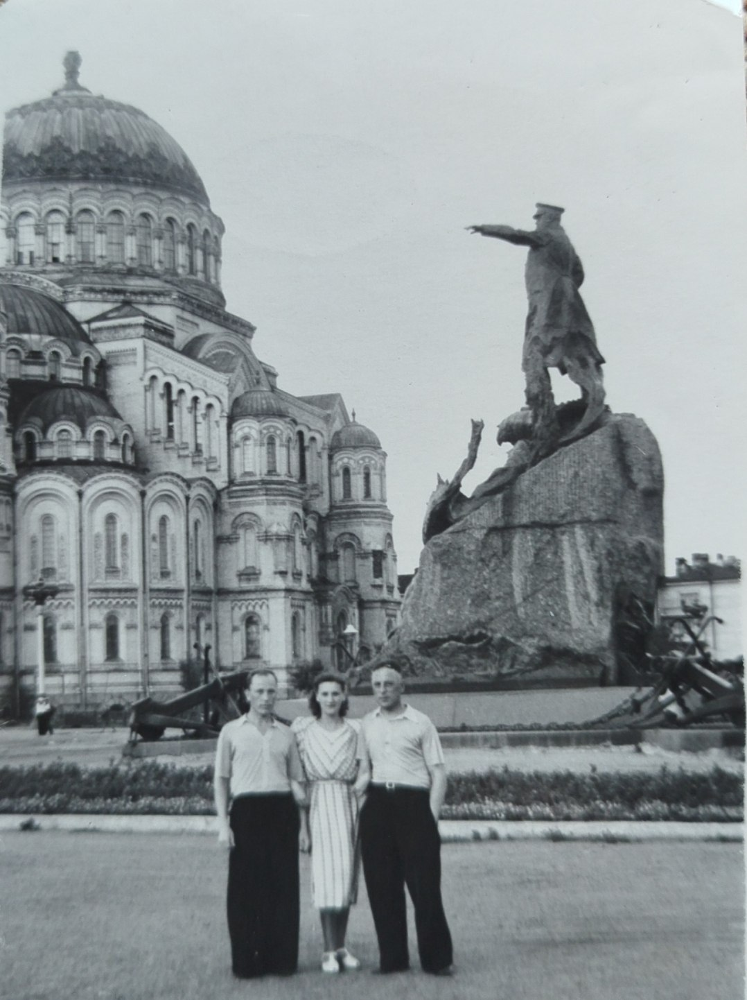
Советский Союз встречал лето 1962 года в тревожном ожидании перемен. Страной правил Никита Хрущёв — энергичный, непредсказуемый, то грозивший Западу «кузькиной матерью», то сажавший кукурузу от Москвы до Магадана. 1 июня были повышены цены на мясо и масло — на 30%, что вызвало глухое брожение. Средняя зарплата составляла 84 рубля. Хлеб стоил 16 копеек, литр молока — 28 копеек, а проезд в трамвае — 3 копейки.
17 июня в Чили сборная Бразилии стала чемпионом мира по футболу, обыграв Чехословакию 3:1. А через неделю, 30 июня, Руанда и Бурунди стали независимыми государствами. Мир менялся стремительно — и в этот водоворот событий вошла маленькая Танечка.
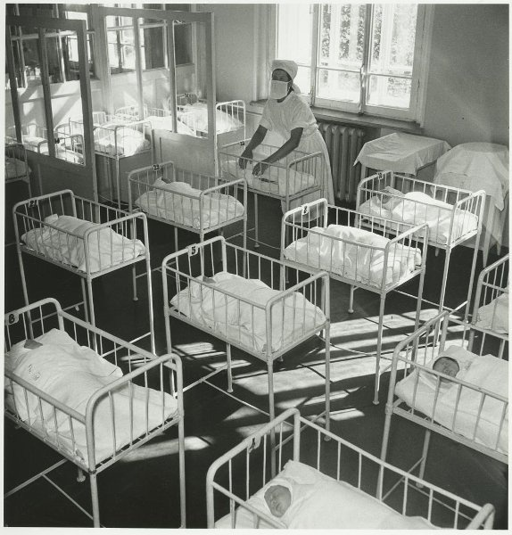
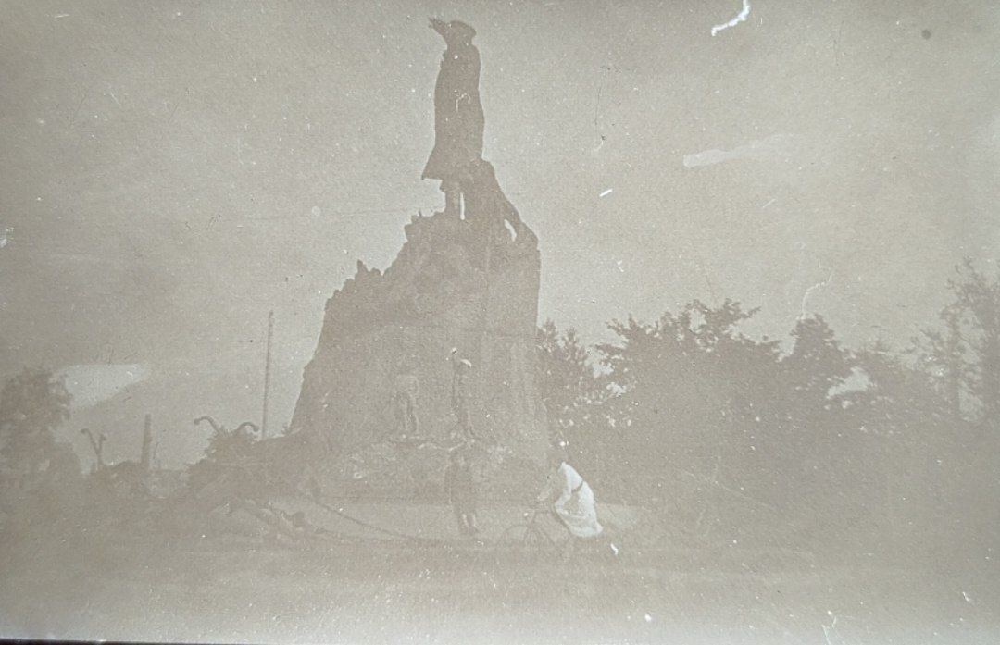
Кронштадт — город-крепость на острове Котлин, основанный Петром Великим в 1704 году. С тех пор он был и остаётся главной базой Балтийского флота. В 1962 году Кронштадт был закрытым городом — въезд по пропускам. Морской собор, заложенный ещё при Николае II, величественно возвышался над домами, а у причалов покачивались военные корабли.
Лето 1962 года в Кронштадте выдалось тёплым. По данным метеостанции, 24 июня воздух прогрелся до +20°C, было солнечно, ветер умеренный — хороший день для того, чтобы появиться на свет. Улицы были полны людей в лёгких платьях и панамах, в воздухе пахло морем и цветущими липами.
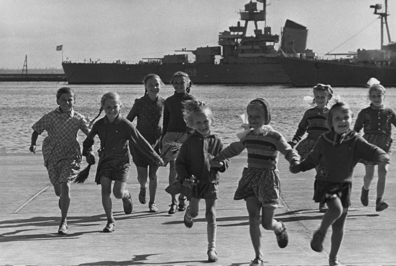
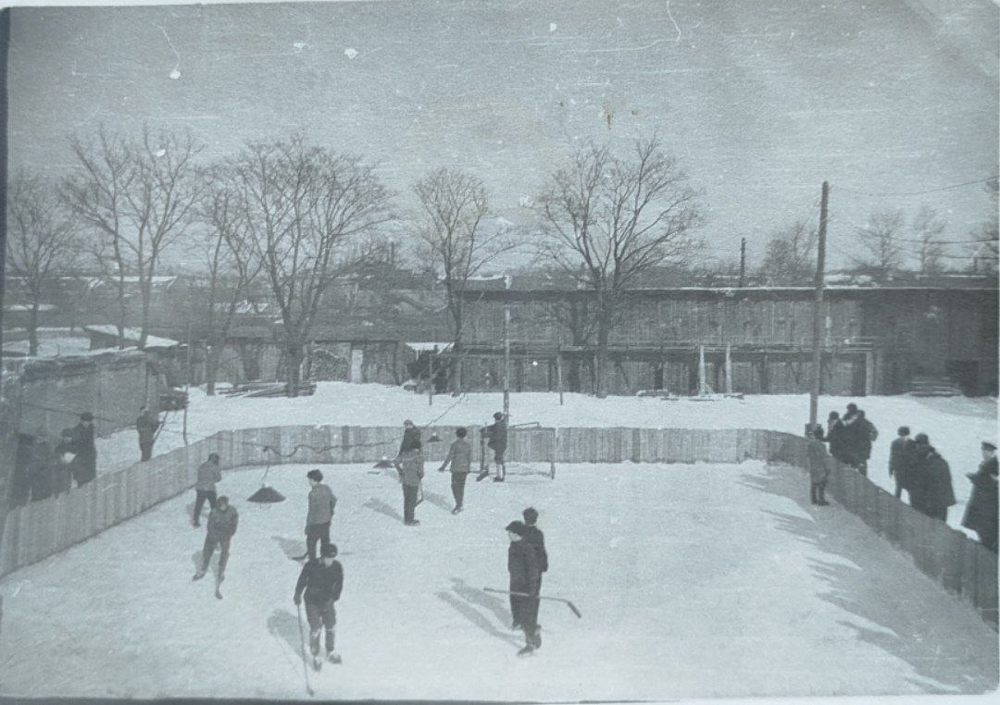
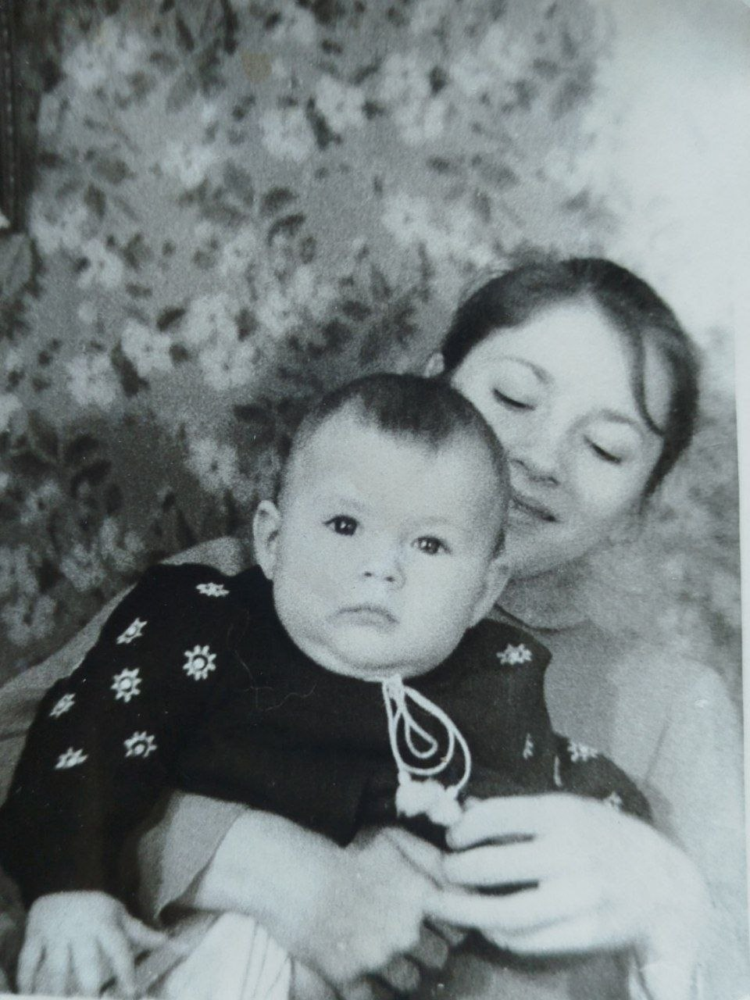
Танечка появилась на свет воскресным утром. В роддоме Кронштадта в тот день было тихо — медсёстры в белых халатах, строгий режим, запах эфира и кипячёных простыней. А дома уже накрывали стол: оливье, селёдка под шубой, котлеты, компот и непременный торт «Наполеон». Взрослые шептались о политике — о том, что в Новочеркасске стреляли в рабочих, что цены растут, что Хрущёв опять что-то затеял. Но всё это было далеко от той крошечной девочки, которая только что сделала свой первый вдох.
«Каждый ребенок появляется на свет с вестью, что Бог еще не разочаровался в людях»— Рабиндранат Тагор
Танюша росла весёлой и живой девочкой. На этой фотографии — её юная тётя держит малышку на руках с той трогательной осторожностью, с которой старшие дети берут на руки младших. А вот уже другая: старшая сестра катает Таню в коляске по улицам Кронштадта — мимо Морского собора, мимо памятника Макарову, по мощёным булыжником улицам.
Пройдёт шесть лет — и мы увидим Танюшу уже совсем большой, вместе с семьёй на отдыхе. Платьице в горошек, банты, улыбка до ушей — обычное советское детство, в котором были мороженое за 9 копеек, газировка с сиропом, книжки про Незнайку и бесконечные дворовые игры.
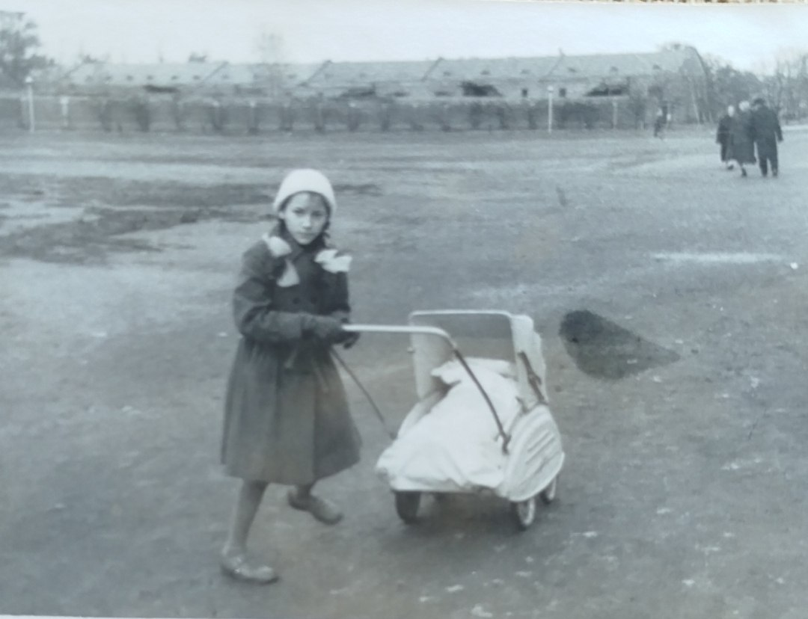
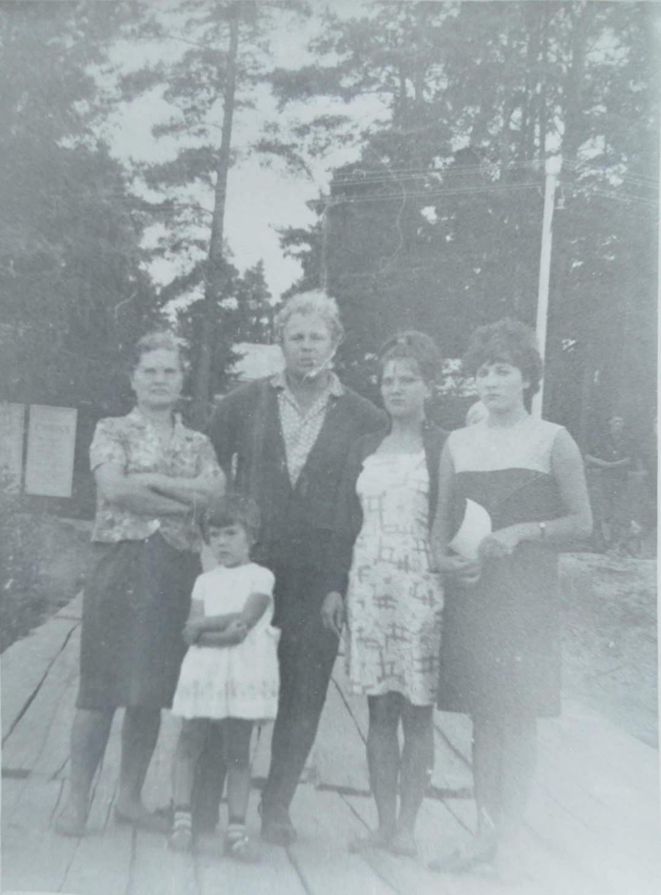
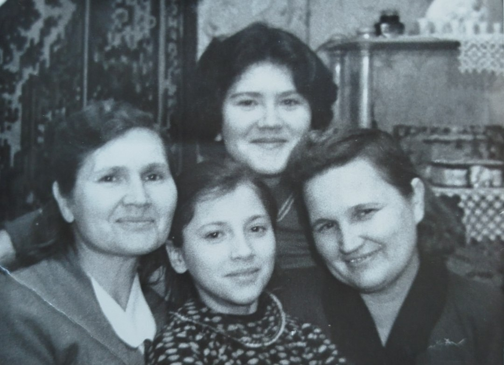
В год рождения Татьяны в СССР гремели песни, которые будут петь ещё десятилетиями. «Пусть всегда будет солнце» Тамары Миансаровой впервые прозвучала по радио именно этим летом. «Течёт река Волга» в исполнении Людмилы Зыкиной стала народным хитом. Эдуард Хиль пел «Как провожают пароходы», Муслим Магомаев — «Лучший город Земли».
Из радиоприёмников лилось: «А у нас во дворе есть девчонка одна», «Мальчишки, мальчишки» — песни Аркадия Островского. Мир слушал Элвиса Пресли («Good Luck Charm»), Рэя Чарльза и первые записи «Битлз», которые пока ещё не пересекли океан.
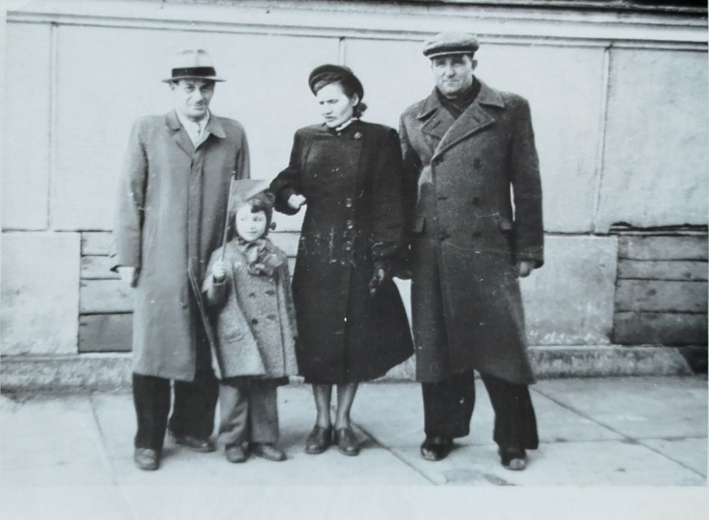
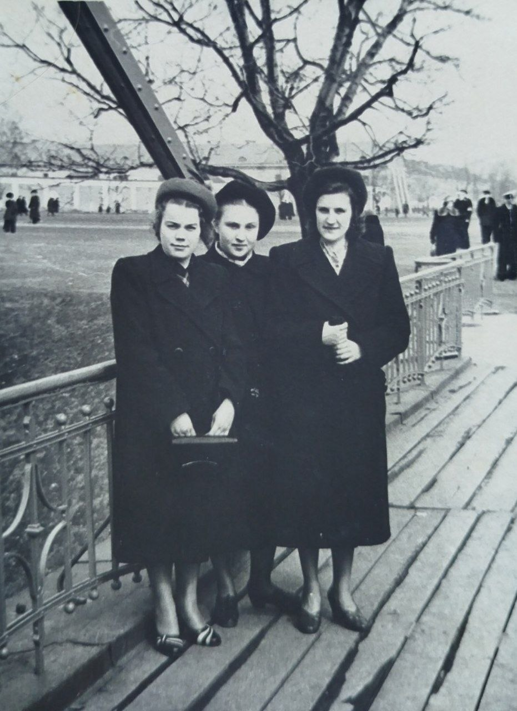
В 1962 году советские женщины носили платья-трапеции, туфли-лодочки и капроновые чулки. Причёска «бабетта» была вершиной мечтаний — чтобы сделать её, девушки записывались в парикмахерские за неделю. Косынки берегли начёс от ветра. Импортные вещи были редкостью и доставались по блату, но свои портные шили не хуже парижских модельеров.
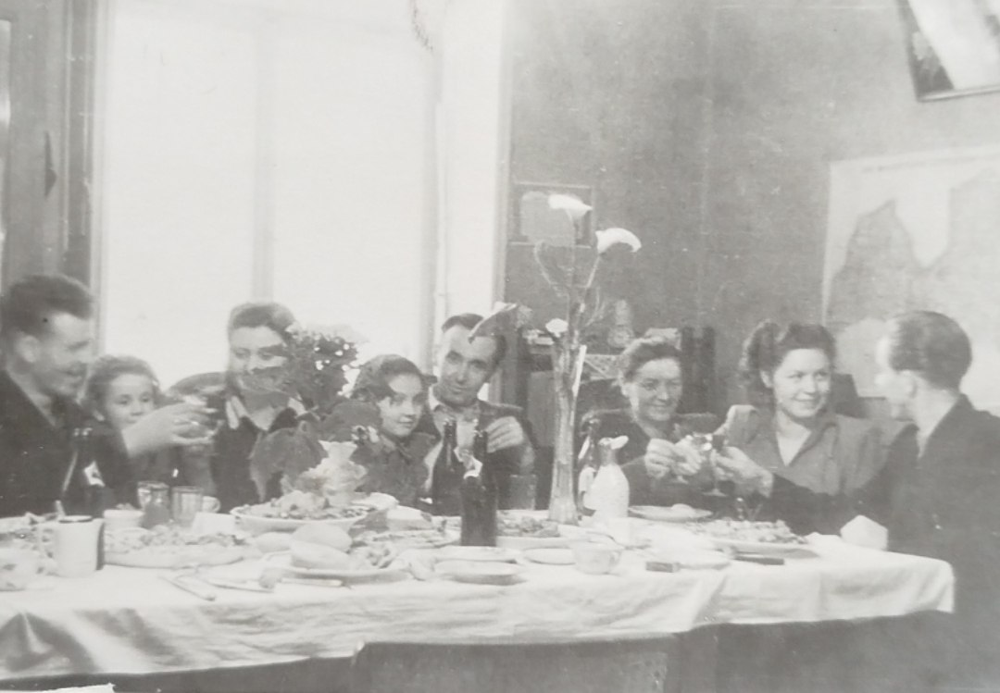
Праздничный стол в 1962 году — это оливье с докторской колбасой, селёдка под шубой, котлеты по-киевски, картофельное пюре с маслом и торт «Наполеон». Из напитков — лимонад «Дюшес» и «Буратино», а для взрослых — советское шампанское и «Столичная».
Часы «Победа» и «Заря», духи «Красная Москва», плюшевые мишки, пластинки «Мелодия», конфеты «Мишка на Севере» и «Кара-Кум». Детям дарили резиновые куклы, кубики, железные дороги и книжки с картинками.
1962 год — это пик космической гонки. Всего год прошёл после полёта Гагарина, и через два месяца в космос отправятся Николаев и Попович на «Востоке-3» и «Востоке-4». В США Джон Гленн уже облетел Землю. В Советском Союзе Александр Прохоров и Николай Басов работали над квантовыми генераторами — за что позже получат Нобелевскую премию.
22 июня 1962 года в СССР прошли первые испытания судна на воздушной подушке — прорывной транспорт того времени. Мир переходил на полупроводники, телевидение осваивало спутниковую связь, а Черчилль сказал историческую фразу: «Чем дольше вы смотрите в прошлое, тем дальше видите будущее».
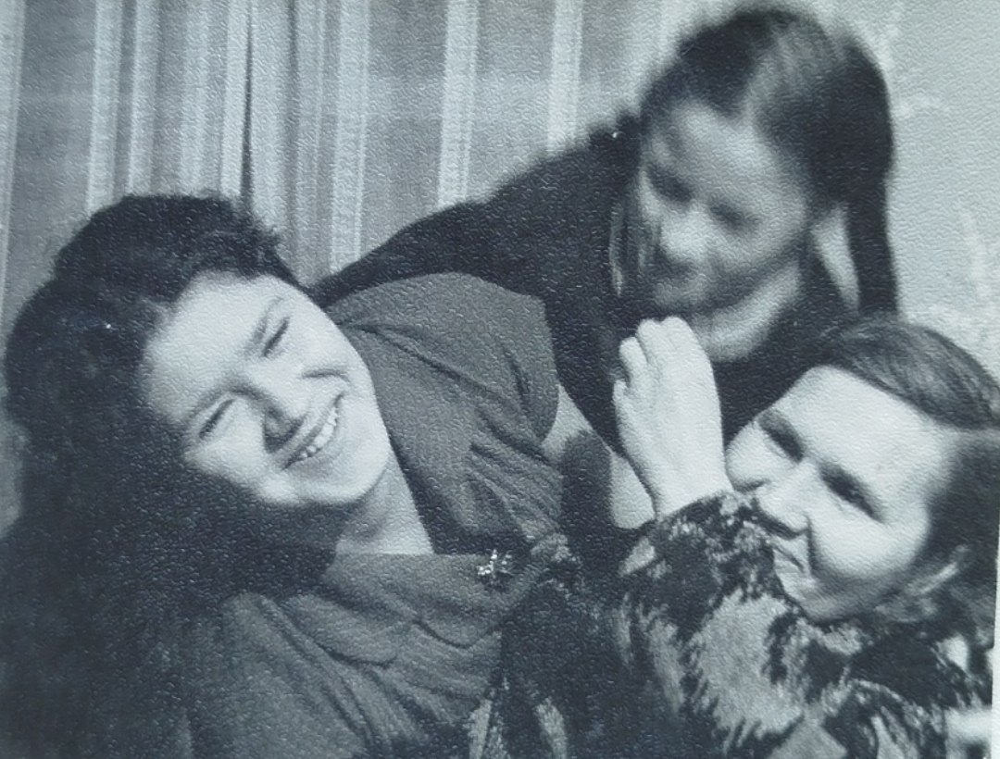
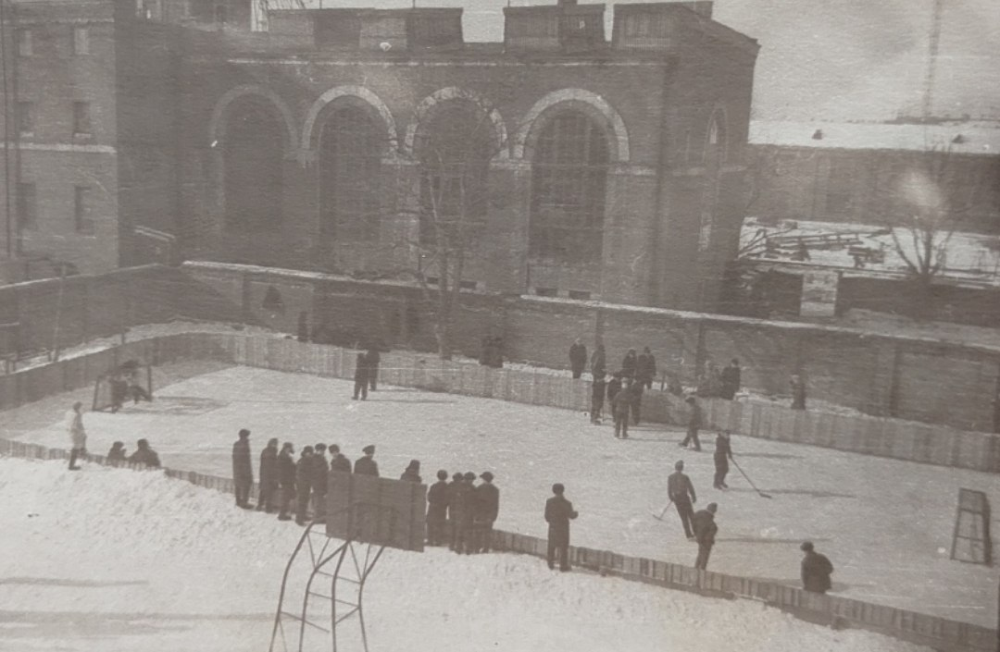
17 июня 1962 года сборная Бразилии стала чемпионом мира по футболу — 17-летний Пеле уже покорял мир, хотя на этом чемпионате он получил травму. Героем финала стал Гарринча, которого в Бразилии обожали. В этом же году Уилт Чемберлен набрал 100 очков в одном матче НБА. А в космос 20 февраля слетал Джон Гленн — первый американец на орбите.
В СССР главными героями были лётчики-космонавты, полярники и строители. По радио читали стихи Роберта Рождественского и Евгения Евтушенко. Дети играли в космонавтов и хотели быть похожими на Гагарина. Танечка тоже росла в этом мире больших надежд и свершений.
Первый американский орбитальный полёт. «Friendship 7» трижды облетел Землю.
Рекорд НБА — 100 очков в одной игре, который не побит до сих пор.
Бразилия — Чехословакия 3:1. Гарринча — лучший игрок турнира.
В 1962 году в СССР вышли «Один день Ивана Денисовича» Солженицына (в журнале «Новый мир») — событие, взорвавшее литературный мир. Читали «Работницу» и «Крокодил», «Огонёк» и «Юность». Детей закармливали «Мурзилкой» и «Весёлыми картинками». Книги издавались миллионными тиражами, и очередь за томом Джека Лондона или Александра Дюма могла тянуться месяцами.
Газеты «Правда» и «Известия» писали о строительстве коммунизма, но между строк читалось другое: народ волновало повышение цен, слухи о Новочеркасске и непростая международная обстановка. Всё это создавало причудливую смесь официального оптимизма и бытовой тревоги, в которой и росла маленькая Таня.
«Один день Ивана Денисовича» • «Работница» • «Крокодил» • «Огонёк» • «Юность» • «Новый мир»
24 июня по народному календарю — день Варнавы Земляничника. На Руси верили, что в этот день поспевает первая земляника, а травы обретают особую целебную силу. День считался мистическим — по полям и лугам, говорили, бродят невидимые духи. Поэтому люди старались не работать в поле, а собираться семьёй за столом, печь пироги с земляникой и мириться после ссор.
О родившихся 24 июня говорили: они практичны, упрямы, умеют находить выход из самых сложных ситуаций — «распутывать узлы». Их камни-талисманы — янтарь и родонит. Именины в этот день празднуют Варнава, Варфоломей, Ефрем и Мария.
♋ ☀ 🐯 🍓
Рак • Солнце • Водяной Тигр • Земляничник
«Пусть всегда будет солнце, пусть всегда будет небо, пусть всегда будет мама, пусть всегда буду я»— из песни, прозвучавшей в 1962-м